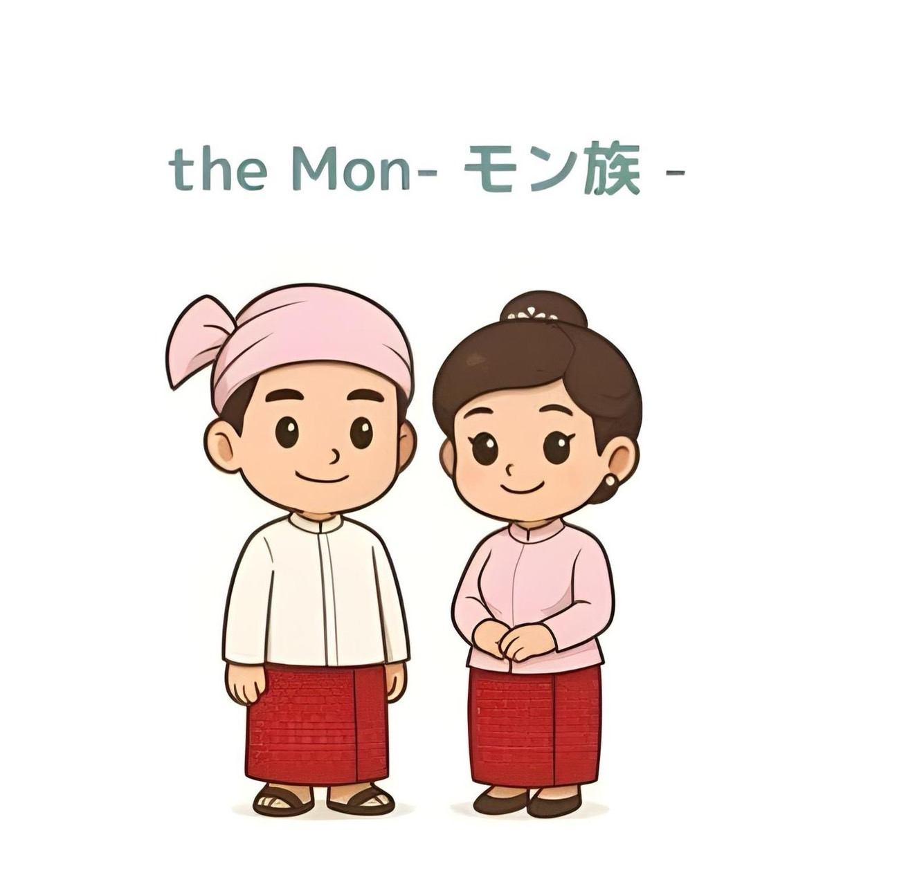
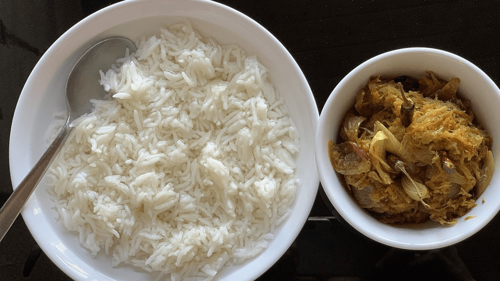
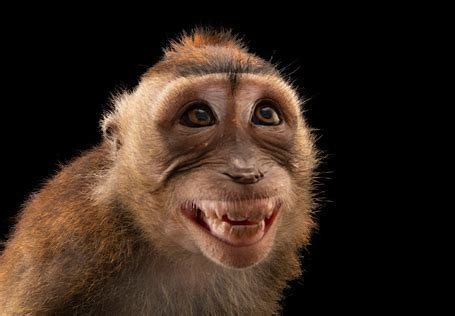
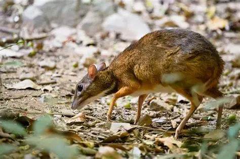
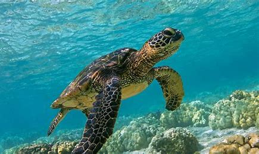

織物と手工芸
モン族は織物、陶芸、そして金細工の技術に優れています。 伝統的なモン族の衣装は、鮮やかな模様と精巧なデザインが特徴です。
モン族は東南アジア本土で最も古くから住む民族の一つであり、 王国の歴史、上座部仏教、そして独自の文化的伝統を持つ豊かな民族です。

モン族は何世紀にもわたって、ミャンマーの芸術、建築、そして宗教に大きな影響を与えてきました。 石碑の刻文、寺院建設、そして上座部仏教の普及における重要な役割で知られています。
モン族の伝統的な衣装は、女性のエレガントなロンジーと色鮮やかなブラウスが特徴です。 男性はシンプルなシャツにロンジーを合わせて着用します。 モン族の服装には明るい色や花柄が多く使われており、豊かな文化的遺産と祝祭の伝統を表しています。

モン族は織物、陶芸、そして金細工の技術に優れています。 伝統的なモン族の衣装は、鮮やかな模様と精巧なデザインが特徴です。
モン族の祭りは、仏教の祝日や歴史的な記念日と重なることが多いです。
断崖の上に危うくそびえる黄金の岩であり、主要な仏教の巡礼地です。
植民地時代の建築と仏教の名所が残る歴史ある都市です。
景色の美しいビーチと沿岸の漁村があります。
モン州の伝統料理は、海産物や米料理、そして祝祭の味わいで知られています。

モン州の森林、洞窟、そして沿岸地域で見られる野生動物：


